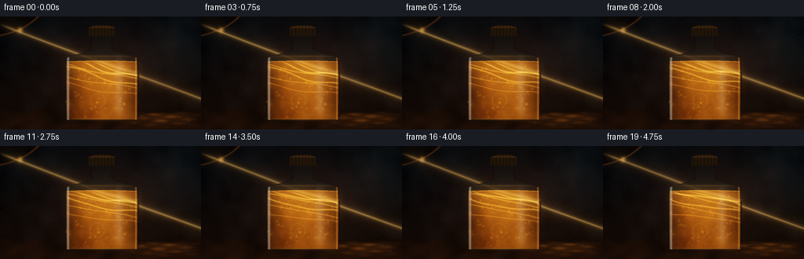
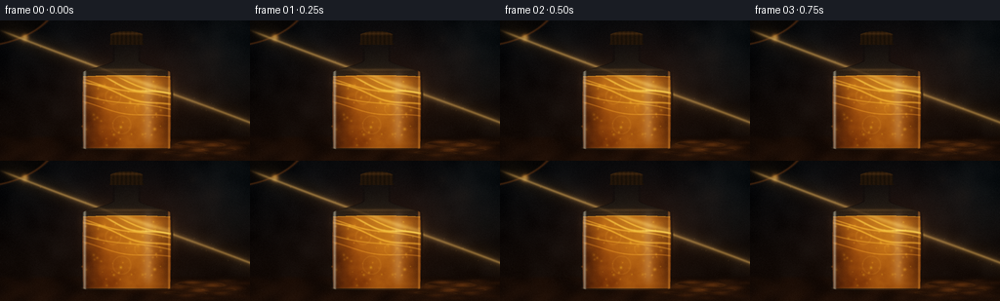
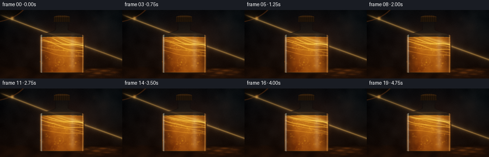
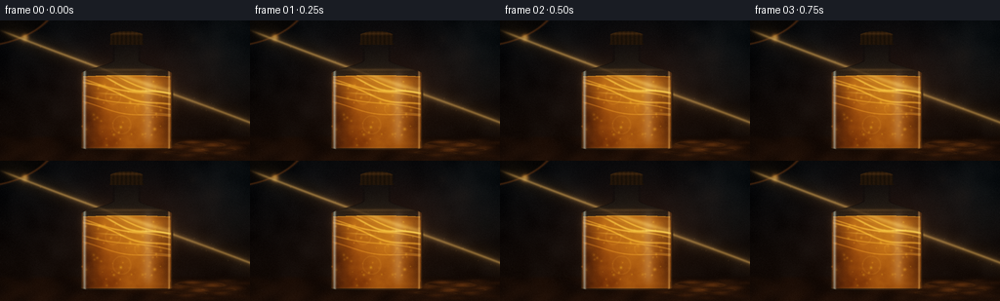
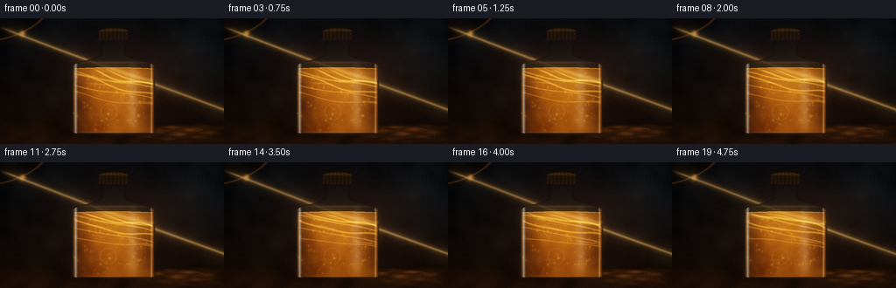
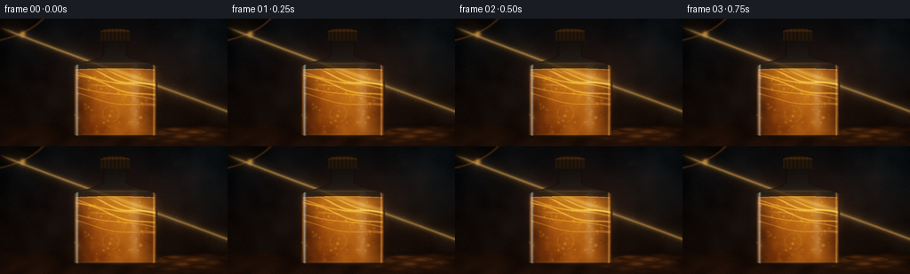

CODING AGENTS AS PIXEL WORLD MODELS
traex/DeepSeek-V4.1-Flash · phygen_050
点击播放 · 原生 RGB 像素
逐轮保存的候选
回放视频、检查图与代码变化。
每份候选均可单独播放。实际图片检查记录在下方工具轨迹中。
候选 01播放与检查图
点击播放 · 原生 RGB 像素


展开代码变化
--- 上一保存版本
+++ 本次保存版本
@@ -0,0 +1,425 @@
+from pathlib import Path
+
+import numpy as np
+from PIL import Image, ImageFilter
+from scipy.ndimage import gaussian_filter
+
+import artifact_io
+
+
+ROOT = Path(__file__).resolve().parent
+WIDTH = 256
+HEIGHT = 144
+FRAMES = 20
+FPS = 4.0
+SS = 3
+HW = WIDTH * SS
+HH = HEIGHT * SS
+
+
+def smoothstep(edge0, edge1, value):
+ t = np.clip((value - edge0) / (edge1 - edge0), 0.0, 1.0)
+ return t * t * (3.0 - 2.0 * t)
+
+
+def gaussian_blob(canvas, cx, cy, radius, color, strength=1.0):
+ """Add a small, softly edged light source to a float RGB canvas."""
+ radius = max(float(radius), 0.35)
+ pad = int(np.ceil(radius * 3.0))
+ x0 = max(0, int(cx) - pad)
+ x1 = min(HW, int(cx) + pad + 1)
+ y0 = max(0, int(cy) - pad)
+ y1 = min(HH, int(cy) + pad + 1)
+ if x0 >= x1 or y0 >= y1:
+ return
+ yy, xx = np.mgrid[y0:y1, x0:x1]
+ d2 = (xx - cx) ** 2 + (yy - cy) ** 2
+ falloff = np.exp(-d2 / (2.0 * radius * radius))
+ core = np.exp(-d2 / (2.0 * (radius * 0.34) ** 2))
+ light = strength * (falloff + 0.55 * core)
+ canvas[y0:y1, x0:x1] += light[..., None] * np.asarray(color, dtype=np.float32)
+
+
+def build_noise():
+ rng = np.random.default_rng(5041)
+ broad = gaussian_filter(rng.standard_normal((HH, HW)).astype(np.float32), 21 * SS)
+ medium = gaussian_filter(rng.standard_normal((HH, HW)).astype(np.float32), 6 * SS)
+ fine = gaussian_filter(rng.standard_normal((HH, HW)).astype(np.float32), 1.4 * SS)
+ for field in (broad, medium, fine):
+ field -= field.mean()
+ field /= field.std() + 1e-6
+ return broad, medium, fine
+
+
+def bottle_profile(y):
+ """Return the outer half-width of the bottle in final-image pixel units."""
+ y = np.asarray(y, dtype=np.float32)
+ hw = np.zeros_like(y)
+
+ cap = (y >= 11.0) & (y < 25.0)
+ cap_top = 16.8 * np.sqrt(np.clip((y - 10.5) / 3.5, 0.0, 1.0))
+ cap_hw = np.where(y < 14.0, cap_top, 16.8)
+ cap_hw = np.where(y >= 23.2, 17.6, cap_hw)
+ hw = np.where(cap, cap_hw, hw)
+
+ neck = (y >= 25.0) & (y < 40.5)
+ hw = np.where(neck, 14.2, hw)
+
+ shoulder_t = smoothstep(40.5, 55.0, y)
+ shoulder = (y >= 40.5) & (y < 55.0)
+ hw = np.where(shoulder, 14.2 + 32.8 * shoulder_t, hw)
+
+ body = (y >= 55.0) & (y < 130.0)
+ body_hw = 47.0 + 0.75 * np.sin(np.pi * (y - 55.0) / 75.0)
+ hw = np.where(body, body_hw, hw)
+
+ base = (y >= 130.0) & (y < 134.0)
+ base_hw = 47.0 * np.sqrt(np.clip(1.0 - ((y - 130.0) / 4.2) ** 2, 0.0, 1.0))
+ hw = np.where(base, base_hw, hw)
+ return hw
+
+
+def make_masks(xx, yy):
+ cx = 129.5
+ halfwidth = bottle_profile(yy)
+ outer = (np.abs(xx - cx) <= halfwidth) & (yy >= 11.0) & (yy < 134.0)
+ glass = outer & (yy >= 24.5)
+ cap = outer & (yy < 25.0)
+
+ inner_halfwidth = np.maximum(halfwidth - 2.35, 0.0)
+ inner = (np.abs(xx - cx) <= inner_halfwidth) & (yy >= 24.5) & (yy < 132.0)
+
+ surface = 56.1 + 1.25 * np.clip((xx - cx) / 47.0, -1.0, 1.0) ** 2
+ liquid = inner & (yy >= surface) & (yy < 131.0)
+ air = inner & ~liquid
+ return outer.astype(np.float32), glass.astype(np.float32), cap.astype(np.float32), liquid.astype(np.float32), air.astype(np.float32), surface
+
+
+def make_background(xx, yy, broad, medium):
+ top = np.array([0.016, 0.027, 0.039], dtype=np.float32)
+ bottom = np.array([0.070, 0.040, 0.025], dtype=np.float32)
+ v = smoothstep(0.0, 1.0, yy / HEIGHT)
+ bg = top * (1.0 - v[..., None]) + bottom * v[..., None]
+
+ # A warm wall glow behind the bottle and a cool reflection at frame right.
+ warm_glow = np.exp(-(((xx - 146.0) / 83.0) ** 2 + ((yy - 56.0) / 49.0) ** 2))
+ cool_glow = np.exp(-(((xx - 239.0) / 54.0) ** 2 + ((yy - 34.0) / 45.0) ** 2))
+ bg += warm_glow[..., None] * np.array([0.070, 0.028, 0.010], dtype=np.float32)
+ bg += cool_glow[..., None] * np.array([0.008, 0.022, 0.027], dtype=np.float32)
+
+ # Out-of-focus highlights give the dark room depth without competing with the beam.
+ for cx, cy, r, color, strength in [
+ (218.0, 35.0, 10.5, (0.16, 0.075, 0.024), 0.10),
+ (240.0, 64.0, 6.0, (0.025, 0.075, 0.070), 0.10),
+ (197.0, 19.0, 4.0, (0.18, 0.10, 0.035), 0.08),
+ (70.0, 26.0, 7.0, (0.065, 0.090, 0.085), 0.06),
+ ]:
+ bg += (np.exp(-(((xx - cx) / r) ** 2 + ((yy - cy) / r) ** 2)) * strength)[..., None] * np.asarray(color, dtype=np.float32)
+
+ # Fine wall texture, strongest away from the central bottle.
+ wall_texture = (0.006 * medium + 0.003 * broad) * smoothstep(6.0, 70.0, np.abs(xx - 128.0))
+ bg += wall_texture[..., None]
+
+ # Wooden tabletop, with restrained grain and a dark front edge.
+ table = smoothstep(116.5, 122.0, yy)
+ wood_tone = np.array([0.105, 0.050, 0.022], dtype=np.float32)
+ grain = 0.018 * np.sin(xx * 0.17 + 1.2 * np.sin(yy * 0.18)) + 0.012 * medium
+ wood = wood_tone + grain[..., None] * np.array([0.70, 0.36, 0.15], dtype=np.float32)
+ wood *= (0.70 + 0.30 * smoothstep(116.0, 143.0, yy))[..., None]
+ bg = bg * (1.0 - table[..., None]) + wood * table[..., None]
+
+ # A soft shadow directly under the bottle.
+ shadow = np.exp(-(((xx - 133.0) / 58.0) ** 2 + ((yy - 132.0) / 7.0) ** 2))
+ bg *= (1.0 - 0.38 * shadow)[..., None]
+ return bg
+
+
+def add_lamp(bg, xx, yy, t):
+ theta = -0.30
+ ct, st = np.cos(theta), np.sin(theta)
+ u = (xx - 4.0) * ct + (yy + 3.0) * st
+ v = -(xx - 4.0) * st + (yy + 3.0) * ct
+ ellipse = (u / 55.0) ** 2 + (v / 26.0) ** 2
+ shade = (ellipse < 1.0) & (v > -12.0) & (xx < 63.0) & (yy < 31.0)
+
+ metal = 0.020 + 0.035 * smoothstep(-1.0, 1.0, -v / 26.0)
+ shade_color = np.stack((metal * 1.05, metal * 0.74, metal * 0.52), axis=-1)
+ bg = bg * (1.0 - shade[..., None] * 0.82) + shade_color * shade[..., None] * 0.82
+
+ rim = np.exp(-((np.sqrt(np.maximum(ellipse, 0.0)) - 0.97) / 0.035) ** 2)
+ rim *= (v > 1.0) & (xx < 62.0) & (yy < 31.0)
+ bg += rim[..., None] * np.array([0.23, 0.11, 0.035], dtype=np.float32)
+
+ bulb_x = 25.5 + 0.18 * np.sin(t * 0.7)
+ bulb_y = 17.2 + 0.12 * np.cos(t * 0.5)
+ bulb = np.exp(-(((xx - bulb_x) / 3.0) ** 2 + ((yy - bulb_y) / 3.0) ** 2))
+ bg += bulb[..., None] * np.array([0.86, 0.50, 0.16], dtype=np.float32)
+ return bg
+
+
+def add_beam(bg, xx, yy, outer, t, dust):
+ # The beam leaves the reading lamp at upper left and crosses the bottle's shoulder.
+ beam_center = 10.0 + 0.372 * xx + 0.65 * np.sin(xx * 0.021 - t * 0.42)
+ beam_dist = yy - beam_center
+ narrow = np.exp(-(beam_dist / (1.18 + 0.10 * np.sin(t * 0.8))) ** 2)
+ inner = np.exp(-(beam_dist / 3.3) ** 2)
+ halo = np.exp(-(beam_dist / 11.5) ** 2)
+ sweep = 0.88 + 0.12 * np.sin(xx * 0.027 + t * 0.55)
+ beam_light = narrow * 0.44 * sweep + inner * 0.17 + halo * 0.055
+ beam_light *= smoothstep(-4.0, 18.0, xx)
+
+ # The bottle occludes the direct shaft while adding its own transmitted glow later.
+ beam_light *= 1.0 - 0.78 * outer
+ bg += beam_light[..., None] * np.array([1.00, 0.70, 0.30], dtype=np.float32)
+
+ # Dust in the illuminated air, animated very slowly.
+ for phase, x0, y0, size, intensity in dust:
+ px = x0 + 1.6 * np.sin(t * 0.45 + phase)
+ py = 10.0 + 0.372 * px + y0 + 1.1 * np.cos(t * 0.38 + phase)
+ gaussian_blob(bg, px * SS, py * SS, size * SS, (0.82, 0.58, 0.24), intensity)
+ return bg
+
+
+def add_glass_and_liquid(img, xx, yy, glass, cap, liquid, air, surface, broad, medium, fine, t):
+ cx = 129.5
+ u = (xx - cx) / 47.0
+ v = np.clip((yy - 55.0) / 76.0, 0.0, 1.0)
+ edge = np.clip(np.abs(u), 0.0, 1.0)
+
+ # Transparent glass: mostly background plus cool edge light and warm internal tint.
+ glass_tint = np.stack(
+ (
+ 0.010 + 0.025 * (1.0 - edge),
+ 0.020 + 0.025 * (1.0 - edge),
+ 0.022 + 0.018 * (1.0 - edge),
+ ),
+ axis=-1,
+ )
+ img = img * (1.0 - glass[..., None] * 0.22) + glass_tint * glass[..., None] * 0.22
+
+ # Dark, slightly ribbed cap with a metallic amber rim.
+ rib = 0.5 + 0.5 * np.sin(xx * 1.45)
+ cap_color = np.stack(
+ (
+ 0.085 + 0.045 * rib,
+ 0.055 + 0.024 * rib,
+ 0.023 + 0.009 * rib,
+ ),
+ axis=-1,
+ )
+ cap_light = np.exp(-((yy - 13.3) / 1.4) ** 2) * 0.28
+ cap_color += cap_light[..., None] * np.array([0.46, 0.25, 0.07], dtype=np.float32)
+ img = img * (1.0 - cap[..., None] * 0.92) + cap_color * cap[..., None] * 0.92
+
+ # Cloudy orange-juice body. The noise fields are shifted slowly to make the pulp drift.
+ shift_x = int(round(t * 2.0 * SS))
+ shift_y = int(round((1.2 * np.sin(t * 0.35) + 0.45 * t) * SS))
+ broad_t = np.roll(np.roll(broad, shift_y, axis=0), shift_x, axis=1)
+ medium_t = np.roll(np.roll(medium, -int(0.5 * shift_y), axis=0), -int(0.7 * shift_x), axis=1)
+ cloud = 0.52 + 0.16 * broad_t + 0.10 * medium_t + 0.035 * fine
+ cloud = np.clip(cloud, 0.20, 0.92)
+
+ central_glow = np.exp(-(((xx - 133.0) / 37.0) ** 2 + ((yy - 84.0) / 38.0) ** 2))
+ top_light = np.exp(-((yy - 60.0) / 15.0) ** 2)
+ side_shadow = smoothstep(0.36, 1.0, edge)
+ liquid_rgb = np.empty((HH, HW, 3), dtype=np.float32)
+ liquid_rgb[..., 0] = 0.38 + 0.48 * cloud + 0.18 * central_glow - 0.22 * side_shadow
+ liquid_rgb[..., 1] = 0.105 + 0.23 * cloud + 0.11 * central_glow - 0.07 * side_shadow
+ liquid_rgb[..., 2] = 0.008 + 0.038 * cloud + 0.025 * central_glow
+ liquid_rgb += (0.055 * top_light + 0.025 * (1.0 - v))[..., None] * np.array([1.0, 0.54, 0.12], dtype=np.float32)
+ liquid_rgb *= (0.76 + 0.24 * (1.0 - side_shadow))[..., None]
+ img = img * (1.0 - liquid[..., None] * 0.93) + liquid_rgb * liquid[..., None] * 0.93
+
+ # Headspace retains the room behind it, with a thin amber meniscus.
+ air_glow = np.exp(-((yy - 50.0) / 19.0) ** 2) * air
+ img += air_glow[..., None] * np.array([0.025, 0.030, 0.022], dtype=np.float32)
+ meniscus = np.exp(-((yy - surface) / 0.72) ** 2) * liquid
+ img += meniscus[..., None] * np.array([0.72, 0.37, 0.075], dtype=np.float32)
+
+ # Broad vertical reflections on the clear glass.
+ left_highlight = np.exp(-((xx - 86.5) / 1.35) ** 2) * glass
+ right_highlight = np.exp(-((xx - 173.0) / 1.05) ** 2) * glass
+ center_reflection = np.exp(-((xx - 151.5) / 4.8) ** 2) * glass * smoothstep(44.0, 69.0, yy) * (1.0 - smoothstep(116.0, 132.0, yy))
+ img += left_highlight[..., None] * np.array([0.44, 0.46, 0.42], dtype=np.float32)
+ img += right_highlight[..., None] * np.array([0.45, 0.22, 0.06], dtype=np.float32)
+ img += center_reflection[..., None] * np.array([0.105, 0.115, 0.105], dtype=np.float32)
+
+ # Bright shoulder and base edges complete the glass silhouette.
+ shoulder_arc = np.exp(-(((xx - cx) / 41.0) ** 2 + ((yy - 50.5) / 1.2) ** 2))
+ shoulder_arc *= glass * (yy < 57.0)
+ base_arc = np.exp(-(((xx - cx) / 44.0) ** 2 + ((yy - 131.0) / 1.1) ** 2))
+ base_arc *= glass
+ img += (0.12 * shoulder_arc + 0.18 * base_arc)[..., None] * np.array([1.0, 0.65, 0.26], dtype=np.float32)
+ return img
+
+
+def add_liquid_caustics(img, xx, yy, liquid, t):
+ cx = 129.5
+ xrel = xx - cx
+
+ # Fine refracted filaments crossing the juice.
+ filaments = [
+ (61.0, 0.285, 2.7, 22.0, 0.3, 0.82, (0.78, 0.44, 0.095)),
+ (65.0, 0.265, 3.8, 17.0, 1.2, 0.95, (0.88, 0.55, 0.14)),
+ (70.0, 0.245, 2.2, 27.0, 2.4, 0.72, (0.64, 0.34, 0.070)),
+ (76.0, 0.225, 3.3, 19.0, 0.7, 0.88, (0.78, 0.42, 0.085)),
+ (84.0, 0.205, 2.0, 31.0, 2.9, 0.62, (0.48, 0.26, 0.052)),
+ (92.0, 0.180, 3.1, 24.0, 1.8, 0.58, (0.42, 0.20, 0.040)),
+ ]
+ for y0, slope, amp, period, phase, width, color in filaments:
+ curve = y0 + slope * xrel + amp * np.sin(xrel / period + phase + t * 0.42)
+ curve += 0.9 * np.sin(xrel / (period * 0.47) - t * 0.27 + phase)
+ line = np.exp(-((yy - curve) / width) ** 2)
+ taper = smoothstep(-48.0, -38.0, xrel) * (1.0 - smoothstep(42.0, 49.0, xrel))
+ vertical = smoothstep(56.0, 62.0, yy) * (1.0 - smoothstep(126.0, 131.0, yy))
+ img += (line * taper * vertical * liquid)[..., None] * np.asarray(color, dtype=np.float32)
+
+ # The transmitted shaft inside the liquid is wider and amber-white.
+ shaft = 58.0 + 0.30 * xrel + 1.1 * np.sin(xrel / 18.0 + t * 0.55)
+ shaft_dist = yy - shaft
+ core = np.exp(-(shaft_dist / 2.2) ** 2)
+ glow = np.exp(-(shaft_dist / 10.5) ** 2)
+ taper = smoothstep(-48.0, -38.0, xrel) * (1.0 - smoothstep(42.0, 49.0, xrel))
+ img += ((0.37 * core + 0.08 * glow) * taper * liquid)[..., None] * np.array([1.0, 0.66, 0.25], dtype=np.float32)
+
+ # Tiny warm rings around the brightest suspended particles.
+ for phase, y0, radius, xoff in [
+ (0.2, 77.0, 7.8, -14.0),
+ (1.8, 91.0, 5.8, 13.0),
+ (3.0, 108.0, 9.2, -5.0),
+ ]:
+ px = cx + xoff + 1.2 * np.sin(t * 0.42 + phase)
+ py = y0 + 1.0 * np.cos(t * 0.36 + phase)
+ d = np.sqrt((xx - px) ** 2 + (yy - py) ** 2)
+ ring = np.exp(-((d - radius) / 0.72) ** 2)
+ img += (ring * liquid * 0.10)[..., None] * np.array([1.0, 0.58, 0.16], dtype=np.float32)
+ return img
+
+
+def add_particles(img, liquid, t):
+ rng = np.random.default_rng(8821)
+ count = 74
+ for i in range(count):
+ bx = rng.uniform(85.0, 174.0)
+ by = rng.uniform(61.0, 128.0)
+ phase = rng.uniform(0.0, 2.0 * np.pi)
+ speed = rng.uniform(0.22, 0.62)
+ amp_x = rng.uniform(0.35, 2.1)
+ amp_y = rng.uniform(0.25, 1.5)
+ px = bx + amp_x * np.sin(phase + t * speed) + 0.20 * t
+ py = by + amp_y * np.cos(phase * 1.13 + t * speed * 0.72)
+ radius = rng.uniform(0.32, 1.15)
+ warmth = rng.uniform(0.55, 1.0)
+ strength = rng.uniform(0.12, 0.45) * warmth
+ gaussian_blob(img, px * SS, py * SS, radius * SS, (0.88, 0.48 * warmth + 0.12, 0.07), strength)
+ if i % 9 == 0:
+ gaussian_blob(img, px * SS, py * SS, radius * 2.7 * SS, (0.55, 0.24, 0.035), 0.09)
+
+ # A few larger, soft pulp veils that make the liquid feel mixed rather than clear.
+ for phase, bx, by, rx, ry, angle in [
+ (0.4, 101.0, 76.0, 9.0, 3.2, -0.4),
+ (2.1, 151.0, 92.0, 7.5, 2.4, 0.7),
+ (4.2, 117.0, 111.0, 11.0, 2.8, 0.15),
+ (5.3, 160.0, 68.0, 5.2, 1.8, -0.8),
+ ]:
+ px = bx + 1.6 * np.sin(t * 0.31 + phase)
+ py = by + 0.8 * np.cos(t * 0.29 + phase)
+ ca, sa = np.cos(angle), np.sin(angle)
+ yy, xx = np.mgrid[0:HH, 0:HW]
+ xf = (xx / SS - px) * ca + (yy / SS - py) * sa
+ yf = -(xx / SS - px) * sa + (yy / SS - py) * ca
+ veil = np.exp(-((xf / rx) ** 2 + (yf / ry) ** 2) * 1.8)
+ img += (veil * liquid * 0.095)[..., None] * np.array([0.95, 0.44, 0.055], dtype=np.float32)
+ return img
+
+
+def add_table_caustics(img, xx, yy, t):
+ table = smoothstep(120.0, 126.0, yy)
+ # A pool of orange light thrown to the lower right by the juice-filled bottle.
+ pool = np.exp(-(((xx - 208.0) / 37.0) ** 2 + ((yy - 128.0) / 10.5) ** 2))
+ wave1 = 0.5 + 0.5 * np.sin((xx - 183.0) * 0.20 + (yy - 126.0) * 0.52 + t * 0.55)
+ wave2 = 0.5 + 0.5 * np.sin((xx - 209.0) * 0.12 - (yy - 128.0) * 0.83 - t * 0.40)
+ caustic = pool * (0.35 + 0.65 * wave1 * wave2) * table
+ img += caustic[..., None] * np.array([0.34, 0.155, 0.035], dtype=np.float32)
+
+ for index, (cx, cy, rx, ry, phase) in enumerate([
+ (205.0, 127.0, 25.0, 2.6, 0.2),
+ (224.0, 133.0, 17.0, 1.8, 1.7),
+ (190.0, 136.0, 21.0, 1.5, 3.1),
+ ]):
+ wobble = 0.7 * np.sin(xx * 0.21 + t * 0.7 + phase)
+ ring = np.exp(-((((xx - cx) / rx) ** 2 + ((yy - cy + wobble) / ry) ** 2 - 1.0) / 0.16) ** 2)
+ img += (ring * table * (0.08 - index * 0.012))[..., None] * np.array([1.0, 0.55, 0.13], dtype=np.float32)
+ return img
+
+
+def post_process(img, frame_index, masks):
+ glass, cap, liquid, air = masks
+
+ # Bloom around the hottest beam and liquid highlights.
+ luminance = np.maximum.reduce((img[..., 0], img[..., 1], img[..., 2]))
+ bright = np.clip((luminance - 0.42) / 0.58, 0.0, 1.0)
+ bloom_source = img * bright[..., None]
+ bloom_img = Image.fromarray(np.clip(bloom_source * 255.0, 0.0, 255.0).astype(np.uint8))
+ bloom = np.asarray(bloom_img.filter(ImageFilter.GaussianBlur(radius=4.8 * SS)), dtype=np.float32) / 255.0
+ img += bloom * 0.34
+
+ # Gentle highlight rolloff keeps the beam luminous rather than flat white.
+ img = 1.0 - np.exp(-np.maximum(img, 0.0) * 1.22)
+ img[..., 0] *= 1.025
+ img[..., 2] *= 0.96
+
+ # Subtle vignette focuses attention on the illuminated bottle.
+ xx = np.linspace(-1.0, 1.0, HW, dtype=np.float32)[None, :]
+ yy = np.linspace(-1.0, 1.0, HH, dtype=np.float32)[:, None]
+ vignette = 1.0 - 0.22 * np.clip((xx * 0.70) ** 2 + (yy * 0.64) ** 2, 0.0, 1.0)
+ img *= vignette[..., None]
+
+ # Deterministic sensor grain, slightly stronger in the shadows.
+ rng = np.random.default_rng(1777 + frame_index)
+ grain = rng.normal(0.0, 1.0, (HH, HW, 1)).astype(np.float32)
+ grain *= (0.0065 + 0.005 * (1.0 - np.clip(luminance, 0.0, 1.0)))[..., None]
+ img += grain
+
+ img = np.clip(img, 0.0, 1.0)
+ image = Image.fromarray((img * 255.0 + 0.5).astype(np.uint8), mode="RGB")
+ image = image.resize((WIDTH, HEIGHT), Image.Resampling.LANCZOS)
+ return np.asarray(image, dtype=np.uint8)
+
+
+def render():
+ yy, xx = np.mgrid[0:HH, 0:HW].astype(np.float32)
+ xx /= SS
+ yy /= SS
+ broad, medium, fine = build_noise()
+ outer, glass, cap, liquid, air, surface = make_masks(xx, yy)
+
+ dust_rng = np.random.default_rng(315)
+ dust = []
+ for _ in range(34):
+ phase = dust_rng.uniform(0.0, 2.0 * np.pi)
+ x0 = dust_rng.uniform(8.0, 248.0)
+ y0 = dust_rng.uniform(-5.0, 5.0)
+ size = dust_rng.uniform(0.16, 0.46)
+ intensity = dust_rng.uniform(0.045, 0.16)
+ dust.append((phase, x0, y0, size, intensity))
+
+ frames = []
+ for frame_index in range(FRAMES):
+ t = frame_index / FPS
+ img = make_background(xx, yy, broad, medium)
+ img = add_lamp(img, xx, yy, t)
+ img = add_beam(img, xx, yy, outer, t, dust)
+ img = add_glass_and_liquid(img, xx, yy, glass, cap, liquid, air, surface, broad, medium, fine, t)
+ img = add_liquid_caustics(img, xx, yy, liquid, t)
+ img = add_particles(img, liquid, t)
+ img = add_table_caustics(img, xx, yy, t)
+ frame = post_process(img, frame_index, (glass, cap, liquid, air))
+ frames.append(frame)
+ return np.stack(frames, axis=0)
+
+
+if __name__ == "__main__":
+ frames = render()
+ artifact_io.save(frames, ROOT)
+ print(f"wrote {frames.shape} RGB frames to {ROOT}")
候选 02播放与检查图
点击播放 · 原生 RGB 像素


展开代码变化
--- 上一保存版本
+++ 本次保存版本
@@ -244,6 +244,12 @@
img += right_highlight[..., None] * np.array([0.45, 0.22, 0.06], dtype=np.float32)
img += center_reflection[..., None] * np.array([0.105, 0.115, 0.105], dtype=np.float32)
+ # Thin warm/cool fringes on the glass edges suggest a little optical dispersion.
+ edge_fringe = np.exp(-((np.abs(u) - 0.965) / 0.022) ** 2) * glass
+ img += edge_fringe[..., None] * np.array([0.19, 0.095, 0.018], dtype=np.float32)
+ inner_fringe = np.exp(-((np.abs(u) - 0.925) / 0.013) ** 2) * glass
+ img += inner_fringe[..., None] * np.array([0.018, 0.105, 0.115], dtype=np.float32)
+
# Bright shoulder and base edges complete the glass silhouette.
shoulder_arc = np.exp(-(((xx - cx) / 41.0) ** 2 + ((yy - 50.5) / 1.2) ** 2))
shoulder_arc *= glass * (yy < 57.0)
@@ -273,6 +279,19 @@
taper = smoothstep(-48.0, -38.0, xrel) * (1.0 - smoothstep(42.0, 49.0, xrel))
vertical = smoothstep(56.0, 62.0, yy) * (1.0 - smoothstep(126.0, 131.0, yy))
img += (line * taper * vertical * liquid)[..., None] * np.asarray(color, dtype=np.float32)
+
+ # Short, brighter glints travel along the refracted lines as the beam moves.
+ for k, (y0, slope, period, phase) in enumerate([
+ (62.5, 0.275, 23.0, 0.5),
+ (70.5, 0.238, 29.0, 2.2),
+ (79.0, 0.211, 19.0, 4.1),
+ (88.0, 0.188, 25.0, 1.3),
+ ]):
+ center_x = -30.0 + 17.0 * k + 22.0 * np.sin(t * 0.34 + phase)
+ curve = y0 + slope * xrel + 2.4 * np.sin(xrel / period + phase + t * 0.42)
+ along = np.exp(-((xrel - center_x) / (10.5 + k * 1.4)) ** 2)
+ cross = np.exp(-((yy - curve) / 0.72) ** 2)
+ img += (along * cross * liquid * 0.34)[..., None] * np.array([1.0, 0.63, 0.20], dtype=np.float32)
# The transmitted shaft inside the liquid is wider and amber-white.
shaft = 58.0 + 0.30 * xrel + 1.1 * np.sin(xrel / 18.0 + t * 0.55)
@@ -382,7 +401,7 @@
img += grain
img = np.clip(img, 0.0, 1.0)
- image = Image.fromarray((img * 255.0 + 0.5).astype(np.uint8), mode="RGB")
+ image = Image.fromarray((img * 255.0 + 0.5).astype(np.uint8))
image = image.resize((WIDTH, HEIGHT), Image.Resampling.LANCZOS)
return np.asarray(image, dtype=np.uint8)
候选 03播放与检查图
点击播放 · 原生 RGB 像素


展开代码变化
--- 上一保存版本
+++ 本次保存版本
@@ -394,8 +394,8 @@
vignette = 1.0 - 0.22 * np.clip((xx * 0.70) ** 2 + (yy * 0.64) ** 2, 0.0, 1.0)
img *= vignette[..., None]
- # Deterministic sensor grain, slightly stronger in the shadows.
- rng = np.random.default_rng(1777 + frame_index)
+ # Fixed sensor texture avoids temporal shimmer and keeps the player deltas compact.
+ rng = np.random.default_rng(1777)
grain = rng.normal(0.0, 1.0, (HH, HW, 1)).astype(np.float32)
grain *= (0.0065 + 0.005 * (1.0 - np.clip(luminance, 0.0, 1.0)))[..., None]
img += grain
可观测工具轨迹
实际执行的命令与返回图片。
命令 1exit 0
/bin/bash -c "sed -n '1,240p' prompt.txt"
命令 2exit 0
/bin/bash -c "sed -n '1,280p' GENERATION_RULES.md"
命令 3exit 0
/bin/bash -c 'cat task_spec.json'
命令 4exit 0
/bin/bash -c "find . -maxdepth 2 -type f -printf '%p\\n' | sort | sed -n '1,240p'"
命令 5exit 0
/bin/bash -c "sed -n '1,280p' artifact_io.py"
命令 6exit 0
/bin/bash -c "sed -n '1,320p' player_template.html"
命令 7exit 0
/bin/bash -c "python - <<'PY' import importlib.util for m in ['numpy','PIL','cv2','imageio','matplotlib','scipy']: print(m, bool(importlib.util.find_spec(m))) PY"
命令 8exit 0
/bin/bash -c 'python generate.py'
命令 9exit 0
/bin/bash -c "python - <<'PY'
from PIL import Image
im=Image.open('inspection.png')
print(im.size)
im.resize((im.width*2,im.height*2),Image.Resampling.NEAREST).save('.tmp/inspection_2x.png')
PY"命令 10exit 0
/bin/bash -c 'command -v chafa || true'
命令 11exit 0
/bin/bash -c 'command -v viu || true'
命令 12exit 0
/bin/bash -c 'command -v img2txt || true'
命令 13exit 1
/bin/bash -c "python - <<'PY'
from PIL import Image
import numpy as np
for fi in [0,10,19]:
im=np.array(Image.open(f'frames/{fi:02d}.png').convert('RGB'),dtype=float)/255
lum=0.2126*im[:,:,0]+0.7152*im[:,:,1]+0.0722*im[:,:,2]
# 80x48 area average
h,w=lum.shape
a=lum.reshape(48,3,80,3).mean((1,3))
chars=' .,:;irsXA253hMHGS#9B&@'
for row in a:
print(''.join(chars[min(len(chars)-1,int(v*len(chars)*1.7))] for v in row))
print('\\n')
PY"命令 14exit 0
/bin/bash -c "python - <<'PY'
from PIL import Image
import numpy as np
chars=' .,:;irsXA253hMHGS#9B&@'
for fi in [0,10,19]:
im=Image.open(f'frames/{fi:02d}.png').convert('L').resize((80,48),Image.Resampling.BOX)
a=np.array(im,dtype=float)/255
print('frame',fi)
for row in a:
print(''.join(chars[min(len(chars)-1,int(v*len(chars)*1.7))] for v in row))
print()
PY"命令 15exit 0
/bin/bash -c "python - <<'PY'
from PIL import Image
import numpy as np
for i in [0,5,10,15,19]:
a=np.array(Image.open(f'frames/{i:02d}.png'),dtype=np.uint8)
f=a.astype(np.float32)/255
lum=.2126*f[:,:,0]+.7152*f[:,:,1]+.0722*f[:,:,2]
print(i, 'meanRGB',np.round(f.mean((0,1)),3),'lum p',np.round(np.percentile(lum,[1,10,50,90,99]),3),'clip',np.mean(f.max(2)>.995),'sat',np.mean((f.max(2)-f.min(2))>.15))
PY"命令 16exit 0
/bin/bash -c "python - <<'PY'
from PIL import Image
import numpy as np
fs=[np.asarray(Image.open(f'frames/{i:02d}.png'),dtype=np.float32)/255 for i in range(20)]
d=[np.abs(fs[i]-fs[i-1]).mean() for i in range(1,20)]
print('mean consecutive MAE', np.mean(d), 'range', min(d), max(d))
for box in [(0,0,80,60),(82,25,177,132),(185,120,240,140),(0,90,80,140)]:
x0,y0,x1,y1=box
v=[np.abs(fs[i][y0:y1,x0:x1]-fs[i-1][y0:y1,x0:x1]).mean() for i in range(1,20)]
print(box, np.mean(v))
# region means frame 0
for box in [(82,56,177,131),(82,25,177,56),(0,0,60,35),(0,0,256,144),(120,56,145,131)]:
x0,y0,x1,y1=box
print('rgb',box,np.round(fs[0][y0:y1,x0:x1].mean((0,1)),3))
PY"命令 17exit 0
/bin/bash -c "python - <<'PY'
from PIL import Image
im=Image.open('frames/00.png')
# nearest-neighbor contact sheet 4x, with no labels, for a second visual read
out=Image.new('RGB',(im.width*4,im.height*4))
out.paste(im.resize((im.width*4,im.height*4),Image.Resampling.NEAREST),(0,0))
out.save('.tmp/frame00_4x.png')
PY"命令 18exit 0
/bin/bash -c 'python generate.py'
命令 19exit 0
/bin/bash -c "python - <<'PY'
from pathlib import Path
from PIL import Image
import numpy as np, json
spec=json.loads(Path('task_spec.json').read_text())
files=sorted(Path('frames').glob('*.png'))
a=np.stack([np.array(Image.open(p).convert('RGB')) for p in files])
print('frames', a.shape, a.dtype, 'expected', (spec['frames'],spec['height'],spec['width'],3))
print('frame range', int(a.min()), int(a.max()), 'unique colors frame0', len(np.unique(a[0].reshape(-1,3),axis=0)))
print('files', {p.name:p.stat().st_size for p in [Path('pixels.npz'),Path('index.html'),Path('inspection.png'),Path('transition_check.png')]})
print('temporal MAE', float(np.abs(a[1:].astype(np.float32)-a[:-1]).mean()))
PY"命令 20exit 0
/bin/bash -c 'python generate.py'
命令 21exit 0
/bin/bash -c "python - <<'PY'
from pathlib import Path
from PIL import Image
import numpy as np, json
spec=json.loads(Path('task_spec.json').read_text())
files=sorted(Path('frames').glob('*.png'))
a=np.stack([np.array(Image.open(p).convert('RGB')) for p in files])
assert a.shape == (spec['frames'],spec['height'],spec['width'],3) and a.dtype == np.uint8
assert len(files)==20 and all(np.isfinite(x).all() for x in [a.astype(float)])
z=np.load('pixels.npz')['pixels']
print('shape',a.shape,'dtype',a.dtype,'npz',z.shape,z.dtype)
print('temporal MAE',round(float(np.abs(a[1:].astype(float)-a[:-1]).mean()),4))
print('pixels.npz',Path('pixels.npz').stat().st_size,'index.html',Path('index.html').stat().st_size)
PY"命令 22exit 0
/bin/bash -c "python - <<'PY'
from pathlib import Path
from PIL import Image
import numpy as np, json, re
spec=json.loads(Path('task_spec.json').read_text())
paths=sorted(Path('frames').glob('*.png'))
frames=np.stack([np.asarray(Image.open(p).convert('RGB')) for p in paths])
assert frames.shape == (20,144,256,3)
assert frames.dtype == np.uint8
assert [p.name for p in paths] == [f'{i:02d}.png' for i in range(20)]
assert np.load('pixels.npz')['pixels'].shape == (144,256,20)
html=Path('index.html').read_text()
assert 'const DATA=' in html and 'window.__pixelReady=true' in html
changed=[]
for i in range(1,20):
changed.append(int(np.any(frames[i] "'!= frames[i-1], axis=2).sum()))
print('"'validated 20 RGB frames at 256x144, 4 fps')
print('changed pixels per transition:', changed)
print('nonblank frame luminance:', np.round([frames[i].mean() for i in [0,5,10,15,19]],2).tolist())
print('artifacts:', ', '.join(p.name for p in [Path('generate.py'),Path('pixels.npz'),Path('index.html'),Path('inspection.png'),Path('transition_check.png')]))
PY"保存候选 3 份；完成命令 22 次；可验证图片返回 0 张。原始 API 响应与完整日志保留在本地。